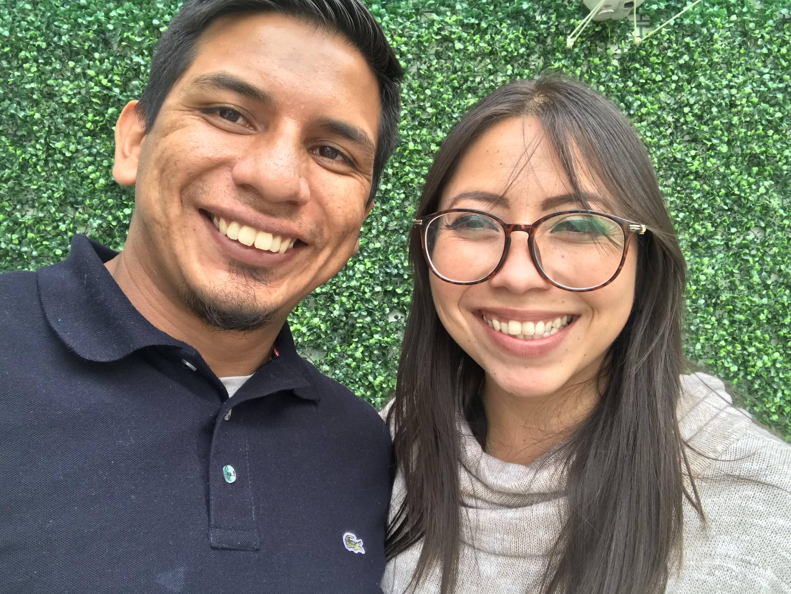

Este soy yo

Jorge Alberto Pérez Orduña
¿A qué me dedico?
Trabajo en una OSC que trabaja con hombres, para promover y fortalecer relaciones igualitarias,
en el área de análisis de datos.
Un poco más de mí
Esposo, padre, hijo y profesional en la gestión de sistemas, adaptandome a los
diferentes planes informáticos de las empresas para las que he trabajado. Cuento con gran
capacidad de análisis de la información y experiencia en la gestión de equipos.
Tras años de experiencia, he tomado la decisión de reorientar mi carrera profesional
con el ánimo de continuar aprendiendo y, también, aportar toda mi experiencia adquirida.
Considero que el cambio es un signo de capacidad de superación y, por ello, creo que siempre
sería capaz de aportar valor en la empresa en la que me encuentre.
Mi objetivo principal es desarrollarme profesionalmente y evolucionar en mi sector,
de modo que busco oportunidades que me permitan hacerlo, al tiempo que trataré de alinearme
completamente con los objetivos de la empresa.
Gustos musicales
Depende mi estado de humor
¿Cuáles son mi hobbies?